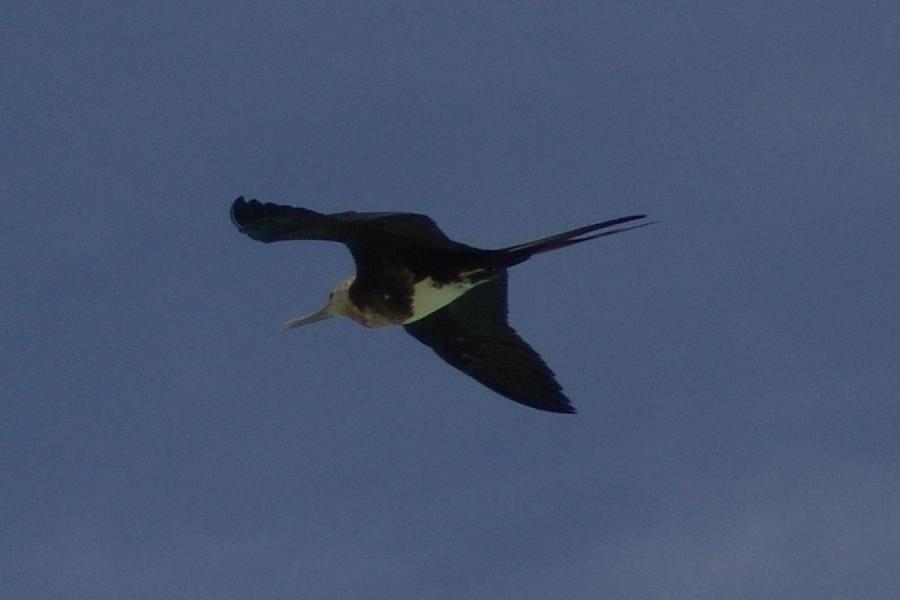

軍艦鳥能邊飛邊睡，卻只在空中短暫休息
把腦波、頭部動作與飛行路徑放在一起，研究者確認了空中的睡眠，也發現「睡得著」與「睡得夠」之間仍有距離。
一隻海鳥連續飛行好幾天，牠會在什麼時候睡覺？看著牠展開翅膀滑過海面，我們很難從外表分辨清醒與睡眠。2016年，一組帶著小型記錄器出海的軍艦鳥，讓研究者第一次用飛行中的腦波回答這個問題。結果裡最值得追問的，還包括牠們睡得有多少。
一、海面不是方便的床
軍艦鳥（Fregata minor）會在海上尋找飛魚與魷魚等食物。當大型魚類或鯨豚把獵物逼近海面，牠們便有機會從空中捕食。這些機會分布零散，覓食需要長時間移動。牠們的長翼適合利用上升氣流，先盤旋升高，再向前滑翔下降。這樣的飛行減少了振翅的需要，也使牠們能在廣闊海域持續搜尋。
然而，飛在海上不表示能隨時降落休息。軍艦鳥的羽毛防水能力有限，腳小、蹼也不發達，落水後重新起飛有困難。對牠們而言，漂在海面並不像許多其他海鳥那樣適合休息。長途飛行因此帶出睡眠問題：牠們究竟在空中睡，還是能把清醒維持到回巢？只記錄一條連續移動的路線，仍無法區分這兩種情況。

二、同時記下大腦與身體
2016年發表的研究，取得了14隻育雛雌性軍艦鳥在海上飛行的腦波紀錄。牠們從加拉巴哥群島的赫諾韋薩島出發，單次出海最長約十天。研究者在兩側大腦表面放置電極，接到頭部的小型記錄器，並同步記錄頭部加速度。背上的GPS則提供位置與高度。把這些時間對齊，便能知道某段腦部活動出現時，鳥正在振翅、滑翔，還是盤旋上升。
腦波讓「看起來安靜」與「進入睡眠」有了可比較的差別。清醒時，紀錄通常呈現振幅較小、頻率較快的活動；進入慢波睡眠時，則出現持續的高振幅慢波。研究者也檢查這些訊號是否只是頭部移動造成的干擾。慢波沒有隨細微頭部動作一起變化，在動作更大的振翅期間也沒有同樣出現。這些對照，使他們能把睡眠訊號與飛行動作分開判讀。
三、兩側大腦不必總是一起睡
飛行中的慢波睡眠，確實有時集中在其中一側大腦。另一側維持較接近清醒的活動，形成所謂的單半球睡眠。研究者依兩側慢波活動的差異，辨認睡眠的不對稱程度；差異特別明顯的片段，才歸入單半球睡眠。研究也記錄到兩側同時進入慢波睡眠。至少在這些滑翔與盤旋片段裡，維持飛行並不總需要一整側大腦保持清醒。
那麼，為什麼空中仍較常出現不對稱睡眠？研究者把轉彎方向與兩側腦波相比，發現較清醒的一側，通常對應轉彎內側的眼睛。在其他鳥類的研究中，這側眼睛通常會保持張開，因此作者推測，軍艦鳥可能藉此察看前進方向。這次飛行紀錄沒有直接拍到眼睛開合，避開其他鳥的碰撞也仍是功能解釋。腦波與轉彎方向的配合提供了線索，下一步則需要更直接的行為觀察。
四、一天的睡眠，分散在許多小段
睡眠主要出現在夜間、不振翅的飛行片段，尤其是利用上升氣流盤旋時。牠們睡著時通常仍在升高，與逐漸靠近海面的下降相比，這樣的情境較有高度餘裕。研究也觀察到短暫、疑似快速動眼期睡眠的片段，伴隨頭部下垂與抽動。不過，整趟飛行並沒有因此變成漫長的空中睡眠。把每天的片段加起來，平均只有約四十二分鐘。
這個平均值的比較對象，是同一研究中回到巢位後取得的陸地紀錄。九隻鳥同時有空中與陸地資料，後者換算每天睡約十二點八小時。連同不同睡眠階段，空中每次睡眠平均約十二秒，陸地上約五十二秒；空中的慢波活動也較弱。差異同時出現在總量、連續性與強度，而不只是睡姿改了。能夠邊飛邊睡，並沒有讓牠們在海上取得與回巢後相同的休息。
五、會睡，為什麼仍大多醒著
即使在夜間滑翔、盤旋，具備睡眠機會的時段裡，軍艦鳥仍大多保持清醒。研究者因此認為，空中的注意力需求，可能常常超過單半球睡眠能提供的程度。牠們在夜裡也會沿海洋渦流等有利覓食的區域移動，這可能有助於天亮後找到食物。不過，當時的紀錄還無法判定牠們依靠哪些線索追蹤，也無法把每段清醒都歸給同一件事。能維持翅膀姿態，只解決了在空中睡覺所需條件的一部分。
回到巢位後，睡眠中的慢波活動會隨時間下降，顯示牠們仍有調節睡眠壓力的機制。這使空中的少睡，看來較像特定處境下的暫時壓縮，而非一生只需要四十二分鐘。要知道回巢後是否完全補足，還需要涵蓋出海與陸地休息完整週期的紀錄。2022年的睡眠研究回顧，也把這類動物少睡後可能存在、卻尚未查清的代價列為問題。維持眼前的飛行與覓食能力，和長期沒有其他影響，是兩個需要分開研究的層次。
六、從飛得下去，到理解休息
這項研究改變了我們能問的問題。原先，人們只能從鳥長時間沒有降落，推想牠們可能在空中睡。當研究者能同步記錄腦波與動作，睡眠便有了發生時機、兩側差異與持續時間。答案也因此比「鳥有自動駕駛」更細緻：有時一側睡，有時兩側睡，而多數時間仍醒著。越能看見實際狀態，就越能辨認哪些能力已經證實、哪些機制還等著解釋。
對讀者而言，有意思的或許還有我們平常判斷休息的方式。眼前一個人能繼續工作，不等於我們已經知道他如何恢復、又付出什麼代價。軍艦鳥的研究讓科學家把持續活動與實際睡眠分開測量，也讓「看起來撐得住」成為可以再問下去的觀察。牠們如何承受海上的少睡，仍須在自己的生態與生理條件裡理解。把這份好奇帶回生活，我們可以重新想想，自己需要什麼條件，才真正有機會停下來。
查證資料來源6 項
核心資料來自2016年的育雛雌鳥野外研究。後續綜述用於釐清測量、推論與未解問題，不視為獨立重複實驗。
- Evidence that birds sleep in mid-flight，Rattenborg等，Nature Communications，2016 ↗
支持內容：主要證據。實讀結果與方法：14隻空中紀錄、9隻空地配對；電極、加速度、GPS；兩側睡眠、42分鐘與12.8小時、睡眠長度和回巢慢波變化。眼睛狀態與功能屬推論。
- First evidence of sleep in flight，Max Planck Society，2016-08-03 ↗
支持內容：研究團隊的通俗說明，用於核對儀器分工、覓食情境與尚待解釋的少睡；不是獨立重複實驗。
- Sleeping on the wing，Niels C. Rattenborg，Interface Focus，2017 ↗
支持內容：實讀睡眠判別與軍艦鳥章節：羽毛與足部限制、滑翔盤旋、不對稱程度與不同飛行方式；長途移動本身不是腦波證據。
- Local Aspects of Avian Non-REM and REM Sleep，2019 ↗
支持內容：實讀空中不對稱睡眠章節及圖說，明確指出眼睛狀態未直接得知；較清醒半球、轉彎與視覺警戒仍須區分量測和解釋。
- The missing cost of ecological sleep loss，Lesku與Rattenborg，SLEEP Advances，2022 ↗
支持內容：實讀鳥類、可能機制與結論；持續表現、睡眠調節與尚未測得的長期代價分開。不沿用其超出2016腦波觀察十天範圍的推廣。
- 軍艦鳥 Fregata minor，台灣生物多樣性網絡 ↗
支持內容：核對臺灣中文名與學名，採軍艦鳥；另以臺灣生命大百科核對中文名歷史混淆。
延伸探討
把故事帶回自己的思考
你會用什麼感覺或變化，判斷自己真的休息到了？有沒有一段時間，你雖然還能把事情做完，卻後來才發現自己需要不同的生活安排？如果有機會重新安排一天，你最想替哪一種休息保留不受打擾的位置？